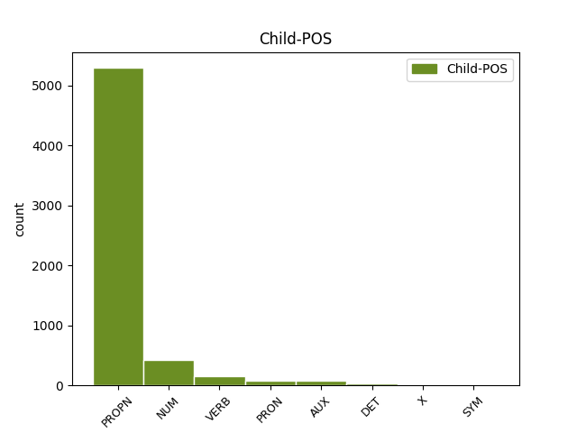

Distribution of features within this leaf


Agreement Rules sorted by frequency.
- When the dependent token is the flat multiword expression(flat) of the head token, and the head token is PROPN and the dependent token is PROPN.
1 Järgnevas _ _ _ _ 0 _ _ _
2 analüüsis _ _ _ _ 0 _ _ _
3 on _ _ _ _ 0 _ _ _
4 toetutud _ _ _ _ 0 _ _ _
5 ka _ _ _ _ 0 _ _ _
6 arutelu _ _ _ _ 0 _ _ _
7 tulemustele _ _ _ _ 0 _ _ _
8 , _ _ _ _ 0 _ _ _
9 mille _ _ _ _ 0 _ _ _
10 viisime _ _ _ _ 0 _ _ _
11 läbi _ _ _ _ 0 _ _ _
12 pärast _ _ _ _ 0 _ _ _
13 ettevõtete _ _ _ _ 0 _ _ _
14 andmete _ _ _ _ 0 _ _ _
15 ökonomeetrilist _ _ _ _ 0 _ _ _
16 analüüsi _ _ _ _ 0 _ _ _
17 mitmete _ _ _ _ 0 _ _ _
18 Eesti _ _ _ _ 0 _ _ _
19 juhtivate _ _ _ _ 0 _ _ _
20 majandusteadlastega _ _ _ _ 0 _ _ _
21 , _ _ _ _ 0 _ _ _
22 nagu _ _ _ _ 0 _ _ _
23 Teet _ _ _ _ 0 _ _ _
24 Rajasalu _ _ _ _ 0 _ _ _
25 , _ _ _ _ 0 _ _ _
26 Urmas _ _ _ _ 0 _ _ _
27 Varblane _ _ _ _ 0 _ _ _
28 , _ _ _ _ 0 _ _ _
29 Erik _ _ _ _ 0 _ _ _
30 Terk _ _ _ _ 0 _ _ _
31 , _ _ _ _ 0 _ _ _
32 Jaanus Jaanus PROPN S Case=Nom|Number=Sing 0 _ _ _
33 Raim Raim PROPN S Case=Nom|Number=Sing 32 flat _ _
34 jt _ _ _ _ 0 _ _ _
35 . _ _ _ _ 0 _ _ _
1 Ettevõtte _ _ _ _ 0 _ _ _
2 tulumaksuerisus _ _ _ _ 0 _ _ _
3 Eestis _ _ _ _ 0 _ _ _
4 on _ _ _ _ 0 _ _ _
5 tõenäoliselt _ _ _ _ 0 _ _ _
6 stiimul _ _ _ _ 0 _ _ _
7 Soome Soome PROPN S Case=Gen|Number=Sing 0 _ _ _
8 ja _ _ _ _ 0 _ _ _
9 Rootsi Rootsi PROPN S Case=Gen|Number=Sing 7 conj _ _
10 väike- _ _ _ _ 0 _ _ _
11 ja _ _ _ _ 0 _ _ _
12 keskmistele _ _ _ _ 0 _ _ _
13 ettevõtetele _ _ _ _ 0 _ _ _
14 , _ _ _ _ 0 _ _ _
15 kelle _ _ _ _ 0 _ _ _
16 potentsiaal _ _ _ _ 0 _ _ _
17 veel _ _ _ _ 0 _ _ _
18 odavamatele _ _ _ _ 0 _ _ _
19 ja _ _ _ _ 0 _ _ _
20 kaugemal _ _ _ _ 0 _ _ _
21 asuvatele _ _ _ _ 0 _ _ _
22 turgudele _ _ _ _ 0 _ _ _
23 liikuda _ _ _ _ 0 _ _ _
24 on _ _ _ _ 0 _ _ _
25 piiratud _ _ _ _ 0 _ _ _
26 . _ _ _ _ 0 _ _ _
1 Ka _ _ _ _ 0 _ _ _
2 Eesti Eesti PROPN S Case=Gen|Number=Sing 3 mod _ _
3 Panga Pank PROPN S Case=Gen|Number=Sing 0 _ _ _
4 viimased _ _ _ _ 0 _ _ _
5 analüüsid _ _ _ _ 0 _ _ _
6 , _ _ _ _ 0 _ _ _
7 mis _ _ _ _ 0 _ _ _
8 on _ _ _ _ 0 _ _ _
9 tehtud _ _ _ _ 0 _ _ _
10 aastate _ _ _ _ 0 _ _ _
11 2001 _ _ _ _ 0 _ _ _
12 ja _ _ _ _ 0 _ _ _
13 2002 _ _ _ _ 0 _ _ _
14 kohta _ _ _ _ 0 _ _ _
15 , _ _ _ _ 0 _ _ _
16 näitavadki _ _ _ _ 0 _ _ _
17 , _ _ _ _ 0 _ _ _
18 et _ _ _ _ 0 _ _ _
19 majanduskasvu _ _ _ _ 0 _ _ _
20 " _ _ _ _ 0 _ _ _
21 mootoreiks _ _ _ _ 0 _ _ _
22 " _ _ _ _ 0 _ _ _
23 on _ _ _ _ 0 _ _ _
24 peale _ _ _ _ 0 _ _ _
25 2001. _ _ _ _ 0 _ _ _
26 aastat _ _ _ _ 0 _ _ _
27 üha _ _ _ _ 0 _ _ _
28 enam _ _ _ _ 0 _ _ _
29 olnud _ _ _ _ 0 _ _ _
30 sisemaine _ _ _ _ 0 _ _ _
31 nõudlus _ _ _ _ 0 _ _ _
32 . _ _ _ _ 0 _ _ _
1 Eestis _ _ _ _ 0 _ _ _
2 moodustasid _ _ _ _ 0 _ _ _
3 töölt _ _ _ _ 0 _ _ _
4 tööle _ _ _ _ 0 _ _ _
5 liikumised _ _ _ _ 0 _ _ _
6 esmasel _ _ _ _ 0 _ _ _
7 üleminekuperioodil _ _ _ _ 0 _ _ _
8 kõigist _ _ _ _ 0 _ _ _
9 liikumistest _ _ _ _ 0 _ _ _
10 30 _ _ _ _ 0 _ _ _
11 % _ _ _ _ 0 _ _ _
12 ( _ _ _ _ 0 _ _ _
13 Eamets Ea_mets PROPN S Case=Nom|Number=Sing 0 _ _ _
14 , _ _ _ _ 0 _ _ _
15 2001 _ _ _ _ 0 _ _ _
16 : _ _ _ _ 0 _ _ _
17 166 166 NUM N Case=Nom|Number=Sing|NumForm=Digit|NumType=Card 13 parataxis _ SpaceAfter=No
18 ) _ _ _ _ 0 _ _ _
19 . _ _ _ _ 0 _ _ _
1 Tööjõu _ _ _ _ 0 _ _ _
2 mobiilsus _ _ _ _ 0 _ _ _
3 , _ _ _ _ 0 _ _ _
4 mõõdetuna _ _ _ _ 0 _ _ _
5 seisundite _ _ _ _ 0 _ _ _
6 vahelise _ _ _ _ 0 _ _ _
7 liikumise _ _ _ _ 0 _ _ _
8 tõenäosusega _ _ _ _ 0 _ _ _
9 , _ _ _ _ 0 _ _ _
10 oli _ _ _ _ 0 _ _ _
11 üldiselt _ _ _ _ 0 _ _ _
12 kõrgem _ _ _ _ 0 _ _ _
13 90ndate _ _ _ _ 0 _ _ _
14 alguses _ _ _ _ 0 _ _ _
15 ja _ _ _ _ 0 _ _ _
16 langes _ _ _ _ 0 _ _ _
17 90ndate _ _ _ _ 0 _ _ _
18 lõpul _ _ _ _ 0 _ _ _
19 ( _ _ _ _ 0 _ _ _
20 Eamets _ _ _ _ 0 _ _ _
21 , _ _ _ _ 0 _ _ _
22 2001 _ _ _ _ 0 _ _ _
23 : _ _ _ _ 0 _ _ _
24 161 _ _ _ _ 0 _ _ _
25 ja _ _ _ _ 0 _ _ _
26 Rõõm Rõõm PROPN S Case=Nom|Number=Sing 0 _ _ _
27 , _ _ _ _ 0 _ _ _
28 2002 _ _ _ _ 0 _ _ _
29 : _ _ _ _ 0 _ _ _
30 7 7 NUM N Case=Nom|Number=Sing|NumForm=Digit|NumType=Card 26 mod _ SpaceAfter=No
31 ) _ _ _ _ 0 _ _ _
32 . _ _ _ _ 0 _ _ _
1 Eeskujuks _ _ _ _ 0 _ _ _
2 toodi _ _ _ _ 0 _ _ _
3 Ungarit Ungari PROPN S Case=Par|Number=Sing 0 _ _ _
4 , _ _ _ _ 0 _ _ _
5 kes _ _ _ _ 0 _ _ _
6 tegi tegema VERB V Mood=Ind|Number=Sing|Person=3|Tense=Past|VerbForm=Fin|Voice=Act 3 mod@relcl _ _
7 90ndate _ _ _ _ 0 _ _ _
8 algul _ _ _ _ 0 _ _ _
9 küll _ _ _ _ 0 _ _ _
10 läbi _ _ _ _ 0 _ _ _
11 suure _ _ _ _ 0 _ _ _
12 majanduslanguse _ _ _ _ 0 _ _ _
13 , _ _ _ _ 0 _ _ _
14 kuid _ _ _ _ 0 _ _ _
15 90ndate _ _ _ _ 0 _ _ _
16 lõpus _ _ _ _ 0 _ _ _
17 hakkas _ _ _ _ 0 _ _ _
18 üleliigsest _ _ _ _ 0 _ _ _
19 tööjõust _ _ _ _ 0 _ _ _
20 vabanenud _ _ _ _ 0 _ _ _
21 tööstus _ _ _ _ 0 _ _ _
22 uuesti _ _ _ _ 0 _ _ _
23 tööhõivet _ _ _ _ 0 _ _ _
24 tekitama _ _ _ _ 0 _ _ _
25 . _ _ _ _ 0 _ _ _
1 Phillips Phillips PROPN S Case=Nom|Number=Sing 0 _ _ _
2 ise ise PRON P Case=Nom|Number=Sing|PronType=Prs|Reflex=Yes 1 mod _ _
3 oli _ _ _ _ 0 _ _ _
4 esitanud _ _ _ _ 0 _ _ _
5 empiirilised _ _ _ _ 0 _ _ _
6 tulemused _ _ _ _ 0 _ _ _
7 ning _ _ _ _ 0 _ _ _
8 proovis _ _ _ _ 0 _ _ _
9 neid _ _ _ _ 0 _ _ _
10 veidi _ _ _ _ 0 _ _ _
11 seletada _ _ _ _ 0 _ _ _
12 . _ _ _ _ 0 _ _ _
1 Seda _ _ _ _ 0 _ _ _
2 tendentsi _ _ _ _ 0 _ _ _
3 võis _ _ _ _ 0 _ _ _
4 näha _ _ _ _ 0 _ _ _
5 tööturu _ _ _ _ 0 _ _ _
6 üldtrendidest _ _ _ _ 0 _ _ _
7 ja _ _ _ _ 0 _ _ _
8 samale _ _ _ _ 0 _ _ _
9 järeldusele _ _ _ _ 0 _ _ _
10 on _ _ _ _ 0 _ _ _
11 tulnud _ _ _ _ 0 _ _ _
12 ka _ _ _ _ 0 _ _ _
13 Mickiewicz Mickiewicz PROPN S Case=Nom|Number=Sing 0 _ _ _
14 ( _ _ _ _ 0 _ _ _
15 Mickiewicz _ _ _ _ 0 _ _ _
16 , _ _ _ _ 0 _ _ _
17 2001 _ _ _ _ 0 _ _ _
18 ) _ _ _ _ 0 _ _ _
19 , _ _ _ _ 0 _ _ _
20 kes _ _ _ _ 0 _ _ _
21 on olema AUX V Mood=Ind|Number=Sing|Person=3|Tense=Pres|VerbForm=Fin|Voice=Act 13 mod@relcl _ _
22 analüüsinud _ _ _ _ 0 _ _ _
23 sektoritevahelise _ _ _ _ 0 _ _ _
24 tööjõu _ _ _ _ 0 _ _ _
25 ümberpaiknemise _ _ _ _ 0 _ _ _
26 ulatust _ _ _ _ 0 _ _ _
27 üleminekuriikides _ _ _ _ 0 _ _ _
28 ümberstruktureerumise _ _ _ _ 0 _ _ _
29 indeksi _ _ _ _ 0 _ _ _
30 abil _ _ _ _ 0 _ _ _
31 . _ _ _ _ 0 _ _ _
1 Õlavarre _ _ _ _ 0 _ _ _
2 süstoolse _ _ _ _ 0 _ _ _
3 ( _ _ _ _ 0 _ _ _
4 SVR _ _ _ _ 0 _ _ _
5 ) _ _ _ _ 0 _ _ _
6 ja _ _ _ _ 0 _ _ _
7 diastoolse _ _ _ _ 0 _ _ _
8 vererõhu _ _ _ _ 0 _ _ _
9 ( _ _ _ _ 0 _ _ _
10 DVR _ _ _ _ 0 _ _ _
11 ) _ _ _ _ 0 _ _ _
12 mõõtmiseks _ _ _ _ 0 _ _ _
13 kasutati _ _ _ _ 0 _ _ _
14 täisautomaatset _ _ _ _ 0 _ _ _
15 Omron _ _ _ _ 0 _ _ _
16 M4 _ _ _ _ 0 _ _ _
17 tüüpi _ _ _ _ 0 _ _ _
18 aparaati _ _ _ _ 0 _ _ _
19 , _ _ _ _ 0 _ _ _
20 mis _ _ _ _ 0 _ _ _
21 vastab _ _ _ _ 0 _ _ _
22 Meditsiiniaparatuuri _ _ _ _ 0 _ _ _
23 Arendamise _ _ _ _ 0 _ _ _
24 Ühingu _ _ _ _ 0 _ _ _
25 ( _ _ _ _ 0 _ _ _
26 Association _ _ _ _ 0 _ _ _
27 for _ _ _ _ 0 _ _ _
28 the _ _ _ _ 0 _ _ _
29 Advancement _ _ _ _ 0 _ _ _
30 of _ _ _ _ 0 _ _ _
31 Medical _ _ _ _ 0 _ _ _
32 Instrumentation _ _ _ _ 0 _ _ _
33 ) _ _ _ _ 0 _ _ _
34 kvaliteedinõuetele _ _ _ _ 0 _ _ _
35 ja _ _ _ _ 0 _ _ _
36 on _ _ _ _ 0 _ _ _
37 saanud _ _ _ _ 0 _ _ _
38 kõrgeima _ _ _ _ 0 _ _ _
39 hinde _ _ _ _ 0 _ _ _
40 Briti _ _ _ _ 0 _ _ _
41 Hüpertensiooniühingult Hüper_tensiooni_ühing PROPN S Case=Abl|Number=Sing 0 _ _ _
42 ( _ _ _ _ 0 _ _ _
43 British British PROPN S Case=Nom|Number=Sing 41 appos _ _
44 Hypertension _ _ _ _ 0 _ _ _
45 Society _ _ _ _ 0 _ _ _
46 ) _ _ _ _ 0 _ _ _
47 ( _ _ _ _ 0 _ _ _
48 10 _ _ _ _ 0 _ _ _
49 ) _ _ _ _ 0 _ _ _
50 . _ _ _ _ 0 _ _ _
1 Seda _ _ _ _ 0 _ _ _
2 tendentsi _ _ _ _ 0 _ _ _
3 võis _ _ _ _ 0 _ _ _
4 näha _ _ _ _ 0 _ _ _
5 tööturu _ _ _ _ 0 _ _ _
6 üldtrendidest _ _ _ _ 0 _ _ _
7 ja _ _ _ _ 0 _ _ _
8 samale _ _ _ _ 0 _ _ _
9 järeldusele _ _ _ _ 0 _ _ _
10 on _ _ _ _ 0 _ _ _
11 tulnud _ _ _ _ 0 _ _ _
12 ka _ _ _ _ 0 _ _ _
13 Mickiewicz Mickiewicz PROPN S Case=Nom|Number=Sing 0 _ _ _
14 ( _ _ _ _ 0 _ _ _
15 Mickiewicz Mickiewicz PROPN S Case=Nom|Number=Sing 13 parataxis _ SpaceAfter=No
16 , _ _ _ _ 0 _ _ _
17 2001 _ _ _ _ 0 _ _ _
18 ) _ _ _ _ 0 _ _ _
19 , _ _ _ _ 0 _ _ _
20 kes _ _ _ _ 0 _ _ _
21 on _ _ _ _ 0 _ _ _
22 analüüsinud _ _ _ _ 0 _ _ _
23 sektoritevahelise _ _ _ _ 0 _ _ _
24 tööjõu _ _ _ _ 0 _ _ _
25 ümberpaiknemise _ _ _ _ 0 _ _ _
26 ulatust _ _ _ _ 0 _ _ _
27 üleminekuriikides _ _ _ _ 0 _ _ _
28 ümberstruktureerumise _ _ _ _ 0 _ _ _
29 indeksi _ _ _ _ 0 _ _ _
30 abil _ _ _ _ 0 _ _ _
31 . _ _ _ _ 0 _ _ _
1 Tehes _ _ _ _ 0 _ _ _
2 eelduse _ _ _ _ 0 _ _ _
3 , _ _ _ _ 0 _ _ _
4 et _ _ _ _ 0 _ _ _
5 te _ _ _ _ 0 _ _ _
6 suudate _ _ _ _ 0 _ _ _
7 10 _ _ _ _ 0 _ _ _
8 minutiga _ _ _ _ 0 _ _ _
9 lahendada _ _ _ _ 0 _ _ _
10 ühe _ _ _ _ 0 _ _ _
11 probleemi _ _ _ _ 0 _ _ _
12 , _ _ _ _ 0 _ _ _
13 proovige _ _ _ _ 0 _ _ _
14 leida _ _ _ _ 0 _ _ _
15 , _ _ _ _ 0 _ _ _
16 mitu _ _ _ _ 0 _ _ _
17 sajandit _ _ _ _ 0 _ _ _
18 teil _ _ _ _ 0 _ _ _
19 kuluks _ _ _ _ 0 _ _ _
20 kõigi kõik DET P Case=Gen|Number=Plur|PronType=Tot 21 det _ _
21 Sudokude Sudoku PROPN S Case=Gen|Number=Plur 0 _ _ _
22 lahendamiseks _ _ _ _ 0 _ _ _
23 . _ _ _ _ 0 _ _ _
1 Kui _ _ _ _ 0 _ _ _
2 hostseadmes _ _ _ _ 0 _ _ _
3 töötab _ _ _ _ 0 _ _ _
4 operatsioonisüsteem _ _ _ _ 0 _ _ _
5 Windows _ _ _ _ 0 _ _ _
6 ME _ _ _ _ 0 _ _ _
7 , _ _ _ _ 0 _ _ _
8 Windows _ _ _ _ 0 _ _ _
9 2000 _ _ _ _ 0 _ _ _
10 , _ _ _ _ 0 _ _ _
11 Windows _ _ _ _ 0 _ _ _
12 XP _ _ _ _ 0 _ _ _
13 , _ _ _ _ 0 _ _ _
14 Mac _ _ _ _ 0 _ _ _
15 OS _ _ _ _ 0 _ _ _
16 9-10X _ _ _ _ 0 _ _ _
17 või _ _ _ _ 0 _ _ _
18 Linux Linux PROPN S Case=Nom|Number=Sing 0 _ _ _
19 2.4.17 2.4.17 NUM N Case=Nom|Number=Sing|NumForm=Digit|NumType=Card 18 flat _ SpaceAfter=No
20 , _ _ _ _ 0 _ _ _
21 siis _ _ _ _ 0 _ _ _
22 välkmäludraivi _ _ _ _ 0 _ _ _
23 kasutamiseks _ _ _ _ 0 _ _ _
24 ei _ _ _ _ 0 _ _ _
25 ole _ _ _ _ 0 _ _ _
26 vaja _ _ _ _ 0 _ _ _
27 mingeid _ _ _ _ 0 _ _ _
28 täiendavaid _ _ _ _ 0 _ _ _
29 draivereid _ _ _ _ 0 _ _ _
30 hosti _ _ _ _ 0 _ _ _
31 installeerida _ _ _ _ 0 _ _ _
32 ( _ _ _ _ 0 _ _ _
33 hosti _ _ _ _ 0 _ _ _
34 USB-porti _ _ _ _ 0 _ _ _
35 ühendatud _ _ _ _ 0 _ _ _
36 USB _ _ _ _ 0 _ _ _
37 välkmäludraiv _ _ _ _ 0 _ _ _
38 on _ _ _ _ 0 _ _ _
39 otsekohe _ _ _ _ 0 _ _ _
40 töövalmis _ _ _ _ 0 _ _ _
41 ) _ _ _ _ 0 _ _ _
42 . _ _ _ _ 0 _ _ _
1 Eeskujuks _ _ _ _ 0 _ _ _
2 toodi _ _ _ _ 0 _ _ _
3 Ungarit Ungari PROPN S Case=Par|Number=Sing 0 _ _ _
4 , _ _ _ _ 0 _ _ _
5 kes _ _ _ _ 0 _ _ _
6 tegi _ _ _ _ 0 _ _ _
7 90ndate _ _ _ _ 0 _ _ _
8 algul _ _ _ _ 0 _ _ _
9 küll _ _ _ _ 0 _ _ _
10 läbi _ _ _ _ 0 _ _ _
11 suure _ _ _ _ 0 _ _ _
12 majanduslanguse _ _ _ _ 0 _ _ _
13 , _ _ _ _ 0 _ _ _
14 kuid _ _ _ _ 0 _ _ _
15 90ndate _ _ _ _ 0 _ _ _
16 lõpus _ _ _ _ 0 _ _ _
17 hakkas hakkama VERB V Mood=Ind|Number=Sing|Person=3|Tense=Past|VerbForm=Fin|Voice=Act 3 conj _ _
18 üleliigsest _ _ _ _ 0 _ _ _
19 tööjõust _ _ _ _ 0 _ _ _
20 vabanenud _ _ _ _ 0 _ _ _
21 tööstus _ _ _ _ 0 _ _ _
22 uuesti _ _ _ _ 0 _ _ _
23 tööhõivet _ _ _ _ 0 _ _ _
24 tekitama _ _ _ _ 0 _ _ _
25 . _ _ _ _ 0 _ _ _
1 " _ _ _ _ 0 _ _ _
2 Konetshnaja Konetshnaja PROPN S Case=Nom|Number=Sing 0 _ _ _
3 ! _ _ _ _ 0 _ _ _
4 " _ _ _ _ 0 _ _ _
5 ütles ütlema VERB V Mood=Ind|Number=Sing|Person=3|Tense=Past|VerbForm=Fin|Voice=Act 2 parataxis _ _
6 ta _ _ _ _ 0 _ _ _
7 viisaka _ _ _ _ 0 _ _ _
8 ja _ _ _ _ 0 _ _ _
9 isegi _ _ _ _ 0 _ _ _
10 malbe _ _ _ _ 0 _ _ _
11 häälega _ _ _ _ 0 _ _ _
12 mikrofoni _ _ _ _ 0 _ _ _
13 ning _ _ _ _ 0 _ _ _
14 tegi _ _ _ _ 0 _ _ _
15 Janile _ _ _ _ 0 _ _ _
16 silma _ _ _ _ 0 _ _ _
17 : _ _ _ _ 0 _ _ _
1 Päikesesüsteemi Päikese_süsteem PROPN S Case=Gen|Number=Sing 0 _ _ _
2 või _ _ _ _ 0 _ _ _
3 millegi _ _ _ _ 0 _ _ _
4 muu muu PRON P Case=Gen|Number=Sing|PronType=Ind 1 conj _ _
5 loodusliku _ _ _ _ 0 _ _ _
6 tekkimise _ _ _ _ 0 _ _ _
7 küsimus _ _ _ _ 0 _ _ _
8 polnud _ _ _ _ 0 _ _ _
9 minevikus _ _ _ _ 0 _ _ _
10 üldse _ _ _ _ 0 _ _ _
11 päevakorral _ _ _ _ 0 _ _ _
12 . _ _ _ _ 0 _ _ _
1 Hiinas Hiina PROPN S Case=Ine|Number=Sing 0 _ _ _
2 on _ _ _ _ 0 _ _ _
3 riiklikult _ _ _ _ 0 _ _ _
4 reguleeritav _ _ _ _ 0 _ _ _
5 turumajandus _ _ _ _ 0 _ _ _
6 ning _ _ _ _ 0 _ _ _
7 seal _ _ _ _ 0 _ _ _
8 on olema AUX V Mood=Ind|Number=Sing|Person=3|Tense=Pres|VerbForm=Fin|Voice=Act 1 conj _ _
9 otsustatud _ _ _ _ 0 _ _ _
10 teisiti _ _ _ _ 0 _ _ _
11 , _ _ _ _ 0 _ _ _
12 seal _ _ _ _ 0 _ _ _
13 arvestatakse _ _ _ _ 0 _ _ _
14 ka _ _ _ _ 0 _ _ _
15 nende _ _ _ _ 0 _ _ _
16 huve _ _ _ _ 0 _ _ _
17 , _ _ _ _ 0 _ _ _
18 kes _ _ _ _ 0 _ _ _
19 eluvõitluses _ _ _ _ 0 _ _ _
20 kaotajaks _ _ _ _ 0 _ _ _
21 jääksid _ _ _ _ 0 _ _ _
22 . _ _ _ _ 0 _ _ _
1 Tempranillost Tempranillo PROPN S Case=Ela|Number=Sing 0 _ _ _
2 , _ _ _ _ 0 _ _ _
3 carnachast _ _ _ _ 0 _ _ _
4 ja _ _ _ _ 0 _ _ _
5 mazuelost _ _ _ _ 0 _ _ _
6 ( _ _ _ _ 0 _ _ _
7 viimane _ _ _ _ 0 _ _ _
8 on olema AUX V Mood=Ind|Number=Sing|Person=3|Tense=Pres|VerbForm=Fin|Voice=Act 1 parataxis _ _
9 carignani _ _ _ _ 0 _ _ _
10 kohalik _ _ _ _ 0 _ _ _
11 nimi _ _ _ _ 0 _ _ _
12 ) _ _ _ _ 0 _ _ _
13 valmistatud _ _ _ _ 0 _ _ _
14 Siglo _ _ _ _ 0 _ _ _
15 Crianza _ _ _ _ 0 _ _ _
16 1995 _ _ _ _ 0 _ _ _
17 sünnitas _ _ _ _ 0 _ _ _
18 kerge _ _ _ _ 0 _ _ _
19 pettumuse _ _ _ _ 0 _ _ _
20 . _ _ _ _ 0 _ _ _
1 Juba _ _ _ _ 0 _ _ _
2 siis _ _ _ _ 0 _ _ _
3 17. _ _ _ _ 0 _ _ _
4 sajandil _ _ _ _ 0 _ _ _
5 on _ _ _ _ 0 _ _ _
6 1617. _ _ _ _ 0 _ _ _
7 a. _ _ _ _ 0 _ _ _
8 Hollandis _ _ _ _ 0 _ _ _
9 kraadile _ _ _ _ 0 _ _ _
10 vastava _ _ _ _ 0 _ _ _
11 kaare _ _ _ _ 0 _ _ _
12 pikkust _ _ _ _ 0 _ _ _
13 mõõtnud _ _ _ _ 0 _ _ _
14 Villerbrord _ _ _ _ 0 _ _ _
15 Snellius _ _ _ _ 0 _ _ _
16 ( _ _ _ _ 0 _ _ _
17 1591-1626 _ _ _ _ 0 _ _ _
18 ) _ _ _ _ 0 _ _ _
19 saades _ _ _ _ 0 _ _ _
20 tulemuseks _ _ _ _ 0 _ _ _
21 108 _ _ _ _ 0 _ _ _
22 km _ _ _ _ 0 _ _ _
23 ning _ _ _ _ 0 _ _ _
24 1636. _ _ _ _ 0 _ _ _
25 a. _ _ _ _ 0 _ _ _
26 Inglismaal Inglis_maa PROPN S Case=Ade|Number=Sing 27 orphan _ _
27 Richard Richard PROPN S Case=Nom|Number=Sing 0 _ _ _
28 Norwod _ _ _ _ 0 _ _ _
29 ( _ _ _ _ 0 _ _ _
30 1590-1636 _ _ _ _ 0 _ _ _
31 ) _ _ _ _ 0 _ _ _
32 Londoni _ _ _ _ 0 _ _ _
33 ja _ _ _ _ 0 _ _ _
34 Yorki _ _ _ _ 0 _ _ _
35 vahelisel _ _ _ _ 0 _ _ _
36 kaarel _ _ _ _ 0 _ _ _
37 . _ _ _ _ 0 _ _ _
1 Poolfinaalis _ _ _ _ 0 _ _ _
2 alistas _ _ _ _ 0 _ _ _
3 Märtin _ _ _ _ 0 _ _ _
4 itaallase _ _ _ _ 0 _ _ _
5 Simone _ _ _ _ 0 _ _ _
6 Campedelli _ _ _ _ 0 _ _ _
7 2 _ _ _ _ 0 _ _ _
8 : _ _ _ _ 0 _ _ _
9 0 _ _ _ _ 0 _ _ _
10 , _ _ _ _ 0 _ _ _
11 Gardemeister Garde_meister PROPN S Case=Nom|Number=Sing 0 _ _ _
12 belglase _ _ _ _ 0 _ _ _
13 Francois _ _ _ _ 0 _ _ _
14 Duvali _ _ _ _ 0 _ _ _
15 2 2 NUM N Case=Nom|Number=Sing|NumForm=Digit|NumType=Card 11 orphan _ SpaceAfter=No
16 : _ _ _ _ 0 _ _ _
17 1 _ _ _ _ 0 _ _ _
18 . _ _ _ _ 0 _ _ _
1 Nõukogude _ _ _ _ 0 _ _ _
2 ajal _ _ _ _ 0 _ _ _
3 oli _ _ _ _ 0 _ _ _
4 Sojuz _ _ _ _ 0 _ _ _
5 šurnalistov _ _ _ _ 0 _ _ _
6 ( _ _ _ _ 0 _ _ _
7 ajakirjanike _ _ _ _ 0 _ _ _
8 liit _ _ _ _ 0 _ _ _
9 -- _ _ _ _ 0 _ _ _
10 vene _ _ _ _ 0 _ _ _
11 k _ _ _ _ 0 _ _ _
12 ) _ _ _ _ 0 _ _ _
13 kõva _ _ _ _ 0 _ _ _
14 sõna _ _ _ _ 0 _ _ _
15 , _ _ _ _ 0 _ _ _
16 Moskvas Moskva PROPN S Case=Ine|Number=Sing 0 _ _ _
17 Arbatil Arbat PROPN S Case=Ade|Number=Sing 16 udep _ _
18 oli _ _ _ _ 0 _ _ _
19 eraldi _ _ _ _ 0 _ _ _
20 restoran _ _ _ _ 0 _ _ _
21 , _ _ _ _ 0 _ _ _
22 kus _ _ _ _ 0 _ _ _
23 sai _ _ _ _ 0 _ _ _
24 ilma _ _ _ _ 0 _ _ _
25 järjekorrata _ _ _ _ 0 _ _ _
26 ja _ _ _ _ 0 _ _ _
27 odavalt _ _ _ _ 0 _ _ _
28 süüa _ _ _ _ 0 _ _ _
29 . _ _ _ _ 0 _ _ _
1 Privaatsuspoliitika _ _ _ _ 0 _ _ _
2 ning _ _ _ _ 0 _ _ _
3 paranoiline _ _ _ _ 0 _ _ _
4 ( _ _ _ _ 0 _ _ _
5 paraku _ _ _ _ 0 _ _ _
6 tihti _ _ _ _ 0 _ _ _
7 mitte _ _ _ _ 0 _ _ _
8 ka _ _ _ _ 0 _ _ _
9 alusetu _ _ _ _ 0 _ _ _
10 ) _ _ _ _ 0 _ _ _
11 hoiak _ _ _ _ 0 _ _ _
12 erinevate _ _ _ _ 0 _ _ _
13 eraeluliste _ _ _ _ 0 _ _ _
14 andmete _ _ _ _ 0 _ _ _
15 kogumisele _ _ _ _ 0 _ _ _
16 on _ _ _ _ 0 _ _ _
17 juba _ _ _ _ 0 _ _ _
18 käesoleval _ _ _ _ 0 _ _ _
19 hetkel _ _ _ _ 0 _ _ _
20 tekitanud _ _ _ _ 0 _ _ _
21 avalikke _ _ _ _ 0 _ _ _
22 diskussioone _ _ _ _ 0 _ _ _
23 erinevate _ _ _ _ 0 _ _ _
24 andmete _ _ _ _ 0 _ _ _
25 analüüsimise _ _ _ _ 0 _ _ _
26 eetikas _ _ _ _ 0 _ _ _
27 , _ _ _ _ 0 _ _ _
28 seda see PRON P Case=Par|Number=Sing|PronType=Dem 30 orphan _ _
29 ka _ _ _ _ 0 _ _ _
30 Eestis Eesti PROPN S Case=Ine|Number=Sing 0 _ _ _
31 . _ _ _ _ 0 _ _ _
1 Üks üks PRON P Case=Nom|Number=Sing|PronType=Dem 7 comp:obj _ _
2 etappidest _ _ _ _ 0 _ _ _
3 on _ _ _ _ 0 _ _ _
4 kavas _ _ _ _ 0 _ _ _
5 korraldada _ _ _ _ 0 _ _ _
6 ka _ _ _ _ 0 _ _ _
7 Tallinnas Tallinn PROPN S Case=Ine|Number=Sing 0 _ _ _
8 . _ _ _ _ 0 _ _ _
1 Ja _ _ _ _ 0 _ _ _
2 pudeliga _ _ _ _ 0 _ _ _
3 , _ _ _ _ 0 _ _ _
4 " _ _ _ _ 0 _ _ _
5 meenutab _ _ _ _ 0 _ _ _
6 baarmen _ _ _ _ 0 _ _ _
7 Reido Reido PROPN S Case=Nom|Number=Sing 0 _ _ _
8 Ruuven _ _ _ _ 0 _ _ _
9 , _ _ _ _ 0 _ _ _
10 kelle _ _ _ _ 0 _ _ _
11 sõnul _ _ _ _ 0 _ _ _
12 oli olema AUX V Mood=Ind|Number=Sing|Person=3|Tense=Past|VerbForm=Fin|Voice=Act 7 mod _ _
13 pudeli _ _ _ _ 0 _ _ _
14 kaupa _ _ _ _ 0 _ _ _
15 ostmine _ _ _ _ 0 _ _ _
16 tollal _ _ _ _ 0 _ _ _
17 väga _ _ _ _ 0 _ _ _
18 moes _ _ _ _ 0 _ _ _
19 - _ _ _ _ 0 _ _ _
20 see _ _ _ _ 0 _ _ _
21 näitas _ _ _ _ 0 _ _ _
22 eriti _ _ _ _ 0 _ _ _
23 kõrgelennulist _ _ _ _ 0 _ _ _
24 taset _ _ _ _ 0 _ _ _
25 . _ _ _ _ 0 _ _ _
1 Sõbrad _ _ _ _ 0 _ _ _
2 on _ _ _ _ 0 _ _ _
3 kõige _ _ _ _ 0 _ _ _
4 mõjukamad _ _ _ _ 0 _ _ _
5 Malaisias Malaisia PROPN S Case=Ine|Number=Sing 0 _ _ _
6 ( _ _ _ _ 0 _ _ _
7 44 _ _ _ _ 0 _ _ _
8 % % SYM N Case=Nom|Number=Sing|NumForm=Digit|NumType=Card 5 parataxis _ SpaceAfter=No
9 ) _ _ _ _ 0 _ _ _
10 ja _ _ _ _ 0 _ _ _
11 Itaalias _ _ _ _ 0 _ _ _
12 ning _ _ _ _ 0 _ _ _
13 Hispaanias _ _ _ _ 0 _ _ _
14 ( _ _ _ _ 0 _ _ _
15 41 _ _ _ _ 0 _ _ _
16 % _ _ _ _ 0 _ _ _
17 ) _ _ _ _ 0 _ _ _
18 , _ _ _ _ 0 _ _ _
19 kool _ _ _ _ 0 _ _ _
20 Jaapanis _ _ _ _ 0 _ _ _
21 ( _ _ _ _ 0 _ _ _
22 38 _ _ _ _ 0 _ _ _
23 % _ _ _ _ 0 _ _ _
24 ) _ _ _ _ 0 _ _ _
25 ja _ _ _ _ 0 _ _ _
26 Austraalias _ _ _ _ 0 _ _ _
27 ( _ _ _ _ 0 _ _ _
28 34 _ _ _ _ 0 _ _ _
29 % _ _ _ _ 0 _ _ _
30 ) _ _ _ _ 0 _ _ _
31 , _ _ _ _ 0 _ _ _
32 emad _ _ _ _ 0 _ _ _
33 oskavad _ _ _ _ 0 _ _ _
34 kõige _ _ _ _ 0 _ _ _
35 paremini _ _ _ _ 0 _ _ _
36 seletada _ _ _ _ 0 _ _ _
37 Hollandis _ _ _ _ 0 _ _ _
38 ( _ _ _ _ 0 _ _ _
39 32 _ _ _ _ 0 _ _ _
40 % _ _ _ _ 0 _ _ _
41 ) _ _ _ _ 0 _ _ _
42 , _ _ _ _ 0 _ _ _
43 USAs _ _ _ _ 0 _ _ _
44 ( _ _ _ _ 0 _ _ _
45 22 _ _ _ _ 0 _ _ _
46 % _ _ _ _ 0 _ _ _
47 ) _ _ _ _ 0 _ _ _
48 ja _ _ _ _ 0 _ _ _
49 Ungaris _ _ _ _ 0 _ _ _
50 ( _ _ _ _ 0 _ _ _
51 20 _ _ _ _ 0 _ _ _
52 % _ _ _ _ 0 _ _ _
53 ) _ _ _ _ 0 _ _ _
54 . _ _ _ _ 0 _ _ _
1 Tema _ _ _ _ 0 _ _ _
2 on _ _ _ _ 0 _ _ _
3 Veenuselt _ _ _ _ 0 _ _ _
4 , _ _ _ _ 0 _ _ _
5 mina mina PRON P Case=Nom|Number=Sing|Person=1|PronType=Prs 6 subj@cop _ _
6 Marsilt Mars PROPN S Case=Abl|Number=Sing 0 _ _ _
7 . _ _ _ _ 0 _ _ _
1 Lennujaama _ _ _ _ 0 _ _ _
2 meeneletist _ _ _ _ 0 _ _ _
3 ostsin _ _ _ _ 0 _ _ _
4 brošüüri _ _ _ _ 0 _ _ _
5 " _ _ _ _ 0 _ _ _
6 Xinjiang Xinjiang PROPN S Case=Nom|Number=Sing 0 _ _ _
7 in _ _ _ _ 0 _ _ _
8 brief brief X S Case=Nom|Number=Sing 6 flat@foreign _ SpaceAfter=No
9 " _ _ _ _ 0 _ _ _
10 ( _ _ _ _ 0 _ _ _
11 " _ _ _ _ 0 _ _ _
12 Lühidalt _ _ _ _ 0 _ _ _
13 Xinjiangist _ _ _ _ 0 _ _ _
14 " _ _ _ _ 0 _ _ _
15 ) _ _ _ _ 0 _ _ _
16 ja _ _ _ _ 0 _ _ _
17 lugesin _ _ _ _ 0 _ _ _
18 , _ _ _ _ 0 _ _ _
19 et _ _ _ _ 0 _ _ _
20 Ürümchi _ _ _ _ 0 _ _ _
21 lennuväli _ _ _ _ 0 _ _ _
22 on _ _ _ _ 0 _ _ _
23 suuruselt _ _ _ _ 0 _ _ _
24 Hiinas _ _ _ _ 0 _ _ _
25 viies _ _ _ _ 0 _ _ _
26 ning _ _ _ _ 0 _ _ _
27 see _ _ _ _ 0 _ _ _
28 on _ _ _ _ 0 _ _ _
29 reservlennuväljaks _ _ _ _ 0 _ _ _
30 Euroopast _ _ _ _ 0 _ _ _
31 Pekingisse _ _ _ _ 0 _ _ _
32 lendavatele _ _ _ _ 0 _ _ _
33 hiidlennukitele _ _ _ _ 0 _ _ _
34 . _ _ _ _ 0 _ _ _
1 Väitekirja _ _ _ _ 0 _ _ _
2 avalik _ _ _ _ 0 _ _ _
3 kaitsmine _ _ _ _ 0 _ _ _
4 toimub _ _ _ _ 0 _ _ _
5 11. _ _ _ _ 0 _ _ _
6 juunil _ _ _ _ 0 _ _ _
7 2004. _ _ _ _ 0 _ _ _
8 a. _ _ _ _ 0 _ _ _
9 algusega _ _ _ _ 0 _ _ _
10 kell _ _ _ _ 0 _ _ _
11 11.00 _ _ _ _ 0 _ _ _
12 Eesti _ _ _ _ 0 _ _ _
13 Põllumajandusülikooli _ _ _ _ 0 _ _ _
14 Loomakasvatusinstituudi _ _ _ _ 0 _ _ _
15 teadusnõukogu _ _ _ _ 0 _ _ _
16 saalis _ _ _ _ 0 _ _ _
17 ( _ _ _ _ 0 _ _ _
18 Tartu Tartu PROPN S Case=Gen|Number=Sing 0 _ _ _
19 , _ _ _ _ 0 _ _ _
20 Kreutzwaldi Kreutzwald PROPN S Case=Gen|Number=Sing 18 list _ _
21 1 _ _ _ _ 0 _ _ _
22 ) _ _ _ _ 0 _ _ _
1 On _ _ _ _ 0 _ _ _
2 tehtud _ _ _ _ 0 _ _ _
3 juba _ _ _ _ 0 _ _ _
4 ka _ _ _ _ 0 _ _ _
5 esimesi _ _ _ _ 0 _ _ _
6 katseid _ _ _ _ 0 _ _ _
7 eikosapentaeenhappe _ _ _ _ 0 _ _ _
8 mikrobioloogiliseks _ _ _ _ 0 _ _ _
9 sünteesiks _ _ _ _ 0 _ _ _
10 Mortirella Mortirella PROPN S Case=Gen|Number=Sing 0 _ _ _
11 fungi fungi X S Case=Gen|Number=Sing 10 flat _ _
12 abil _ _ _ _ 0 _ _ _
13 ( _ _ _ _ 0 _ _ _
14 Leman _ _ _ _ 0 _ _ _
15 , _ _ _ _ 0 _ _ _
16 1993 _ _ _ _ 0 _ _ _
17 ) _ _ _ _ 0 _ _ _
18 . _ _ _ _ 0 _ _ _
1 Hingamiselundite _ _ _ _ 0 _ _ _
2 amüloidoosi _ _ _ _ 0 _ _ _
3 sündroomid _ _ _ _ 0 _ _ _
4 ( _ _ _ _ 0 _ _ _
5 Gillmore Gillmore PROPN S Case=Nom|Number=Sing 0 _ _ _
6 & _ _ _ _ 0 _ _ _
7 Hawkins Hawkins PROPN S Case=Nom|Number=Sing 5 goeswith _ SpaceAfter=No
8 , _ _ _ _ 0 _ _ _
9 1999 _ _ _ _ 0 _ _ _
10 ) _ _ _ _ 0 _ _ _
1 Angloameerika _ _ _ _ 0 _ _ _
2 ja _ _ _ _ 0 _ _ _
3 Euroopa _ _ _ _ 0 _ _ _
4 ülikoolides _ _ _ _ 0 _ _ _
5 loetakse _ _ _ _ 0 _ _ _
6 taolisi _ _ _ _ 0 _ _ _
7 kursusi _ _ _ _ 0 _ _ _
8 pealkirjade _ _ _ _ 0 _ _ _
9 " _ _ _ _ 0 _ _ _
10 Earth _ _ _ _ 0 _ _ _
11 science _ _ _ _ 0 _ _ _
12 " _ _ _ _ 0 _ _ _
13 või _ _ _ _ 0 _ _ _
14 " _ _ _ _ 0 _ _ _
15 Understanding Understanding PROPN S Case=Nom|Number=Sing 0 _ _ _
16 the _ _ _ _ 0 _ _ _
17 Earth Earth PROPN S Case=Nom|Number=Sing 15 flat@foreign _ SpaceAfter=No
18 " _ _ _ _ 0 _ _ _
19 all _ _ _ _ 0 _ _ _
20 . _ _ _ _ 0 _ _ _
Disagree Examples:
1 Arvestamata _ _ _ _ 0 _ _ _
2 seda _ _ _ _ 0 _ _ _
3 , _ _ _ _ 0 _ _ _
4 et _ _ _ _ 0 _ _ _
5 Nõukogude Nõu_kogu PROPN S Case=Gen|Number=Plur 6 mod _ _
6 Eesti Eesti PROPN S Case=Gen|Number=Sing 0 _ _ _
7 juhid _ _ _ _ 0 _ _ _
8 said _ _ _ _ 0 _ _ _
9 preemiat _ _ _ _ 0 _ _ _
10 käikuantud _ _ _ _ 0 _ _ _
11 elamuehitusruutmeetrite _ _ _ _ 0 _ _ _
12 ja _ _ _ _ 0 _ _ _
13 piimatoodangu _ _ _ _ 0 _ _ _
14 eest _ _ _ _ 0 _ _ _
15 , _ _ _ _ 0 _ _ _
16 kauples _ _ _ _ 0 _ _ _
17 ta _ _ _ _ 0 _ _ _
18 Moskvast _ _ _ _ 0 _ _ _
19 välja _ _ _ _ 0 _ _ _
20 õiguse _ _ _ _ 0 _ _ _
21 tootmise _ _ _ _ 0 _ _ _
22 vähendamiseks _ _ _ _ 0 _ _ _
23 . _ _ _ _ 0 _ _ _
1 " _ _ _ _ 0 _ _ _
2 Tamme Tamme PROPN S Case=Gen|Number=Sing 0 _ _ _
3 ja _ _ _ _ 0 _ _ _
4 Jagomägede Jagomägi PROPN S Case=Gen|Number=Plur 2 conj _ _
5 idee _ _ _ _ 0 _ _ _
6 oli _ _ _ _ 0 _ _ _
7 ju _ _ _ _ 0 _ _ _
8 iseenesest _ _ _ _ 0 _ _ _
9 hea _ _ _ _ 0 _ _ _
10 , _ _ _ _ 0 _ _ _
11 kuid _ _ _ _ 0 _ _ _
12 nad _ _ _ _ 0 _ _ _
13 ei _ _ _ _ 0 _ _ _
14 olnud _ _ _ _ 0 _ _ _
15 ärimehed _ _ _ _ 0 _ _ _
16 . _ _ _ _ 0 _ _ _
17 " _ _ _ _ 0 _ _ _
1 Relva _ _ _ _ 0 _ _ _
2 number _ _ _ _ 0 _ _ _
3 toksiti _ _ _ _ 0 _ _ _
4 sisse _ _ _ _ 0 _ _ _
5 relvaregistri _ _ _ _ 0 _ _ _
6 andmebaasi _ _ _ _ 0 _ _ _
7 ja _ _ _ _ 0 _ _ _
8 hetk _ _ _ _ 0 _ _ _
9 hiljem _ _ _ _ 0 _ _ _
10 oli _ _ _ _ 0 _ _ _
11 käes _ _ _ _ 0 _ _ _
12 edasiste _ _ _ _ 0 _ _ _
13 otsingute _ _ _ _ 0 _ _ _
14 suund _ _ _ _ 0 _ _ _
15 -- _ _ _ _ 0 _ _ _
16 Kaitseväe Kaitse_vägi PROPN S Case=Gen|Number=Sing 17 mod _ _
17 Spetsiaalsete Spetsiaalne PROPN A Case=Gen|Number=Plur 0 _ _ _
18 Operatsioonide _ _ _ _ 0 _ _ _
19 Grupp _ _ _ _ 0 _ _ _
20 ( _ _ _ _ 0 _ _ _
21 SOG _ _ _ _ 0 _ _ _
22 ) _ _ _ _ 0 _ _ _
23 . _ _ _ _ 0 _ _ _
1 Relva _ _ _ _ 0 _ _ _
2 number _ _ _ _ 0 _ _ _
3 toksiti _ _ _ _ 0 _ _ _
4 sisse _ _ _ _ 0 _ _ _
5 relvaregistri _ _ _ _ 0 _ _ _
6 andmebaasi _ _ _ _ 0 _ _ _
7 ja _ _ _ _ 0 _ _ _
8 hetk _ _ _ _ 0 _ _ _
9 hiljem _ _ _ _ 0 _ _ _
10 oli _ _ _ _ 0 _ _ _
11 käes _ _ _ _ 0 _ _ _
12 edasiste _ _ _ _ 0 _ _ _
13 otsingute _ _ _ _ 0 _ _ _
14 suund _ _ _ _ 0 _ _ _
15 -- _ _ _ _ 0 _ _ _
16 Kaitseväe _ _ _ _ 0 _ _ _
17 Spetsiaalsete _ _ _ _ 0 _ _ _
18 Operatsioonide Operatsioon PROPN S Case=Gen|Number=Plur 19 mod _ _
19 Grupp Grupp PROPN S Case=Nom|Number=Sing 0 _ _ _
20 ( _ _ _ _ 0 _ _ _
21 SOG _ _ _ _ 0 _ _ _
22 ) _ _ _ _ 0 _ _ _
23 . _ _ _ _ 0 _ _ _
1 Olja Olja PROPN S Case=Nom|Number=Sing 0 _ _ _
2 : _ _ _ _ 0 _ _ _
3 " _ _ _ _ 0 _ _ _
4 Loomulikult _ _ _ _ 0 _ _ _
5 on olema AUX V Mood=Ind|Number=Plur|Person=3|Tense=Pres|VerbForm=Fin|Voice=Act 1 parataxis _ _
6 eestlastel _ _ _ _ 0 _ _ _
7 omad _ _ _ _ 0 _ _ _
8 rahvatantsud _ _ _ _ 0 _ _ _
9 ja _ _ _ _ 0 _ _ _
10 venelastel _ _ _ _ 0 _ _ _
11 omad _ _ _ _ 0 _ _ _
12 , _ _ _ _ 0 _ _ _
13 aga _ _ _ _ 0 _ _ _
14 eelkõige _ _ _ _ 0 _ _ _
15 on _ _ _ _ 0 _ _ _
16 tegu _ _ _ _ 0 _ _ _
17 ikkagi _ _ _ _ 0 _ _ _
18 inimestega _ _ _ _ 0 _ _ _
19 . _ _ _ _ 0 _ _ _